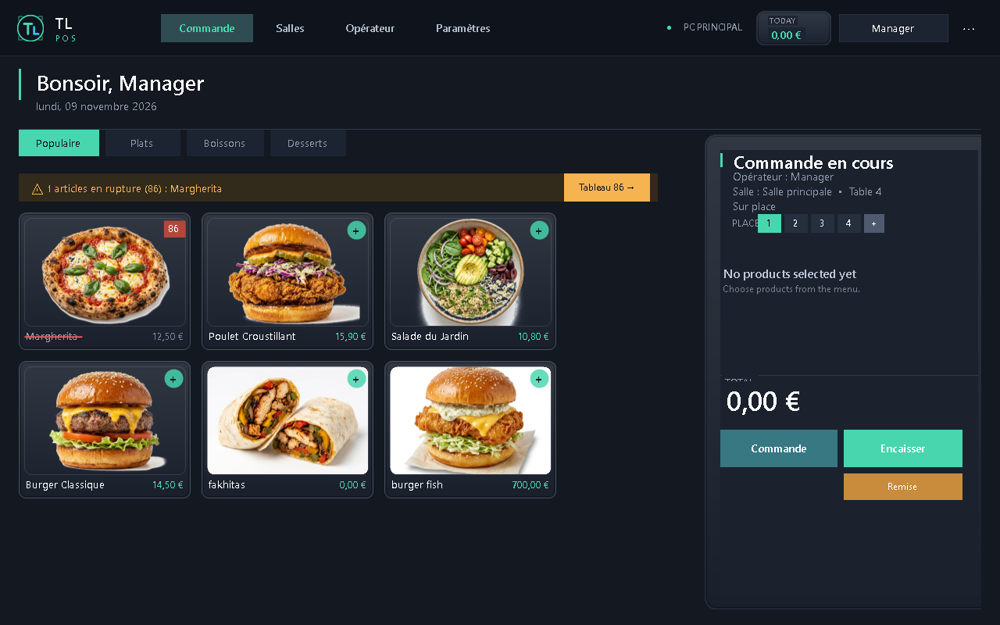
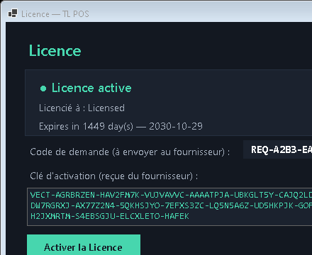
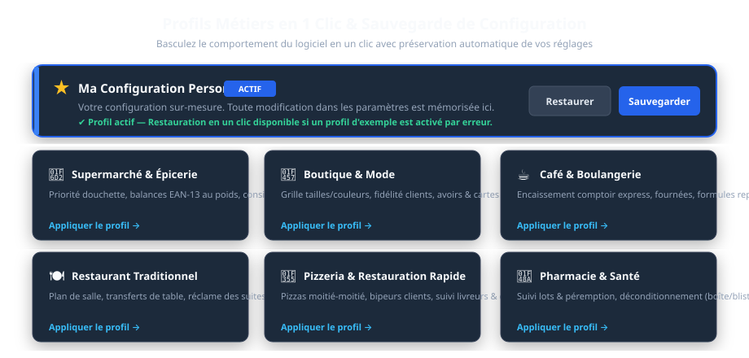
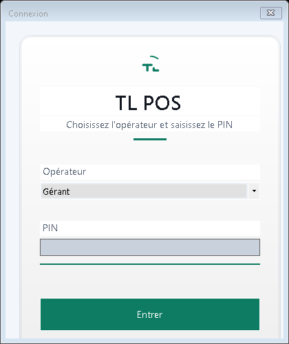
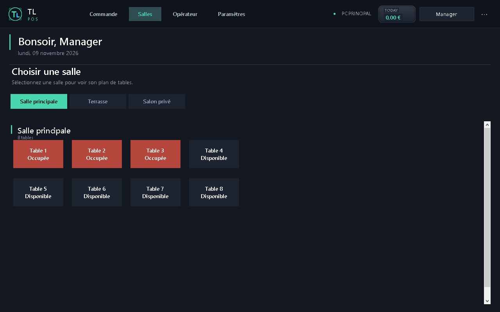
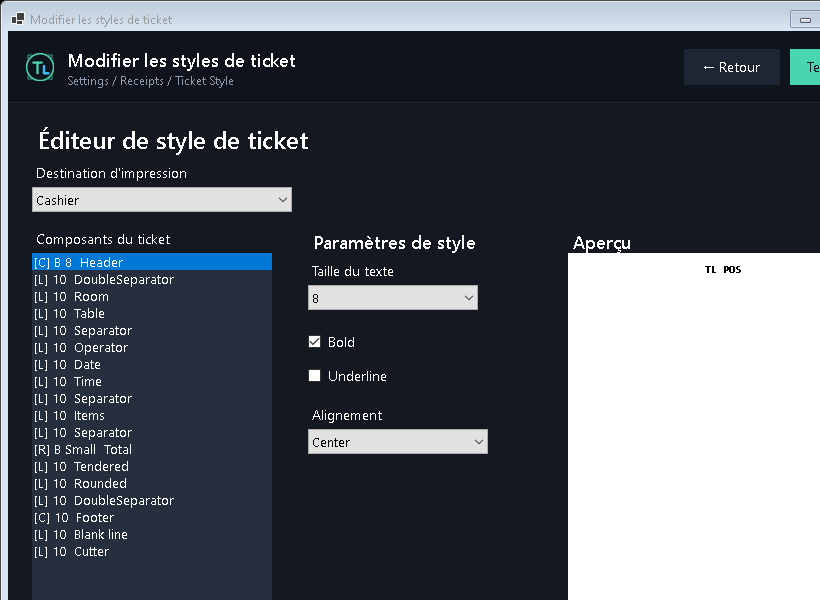
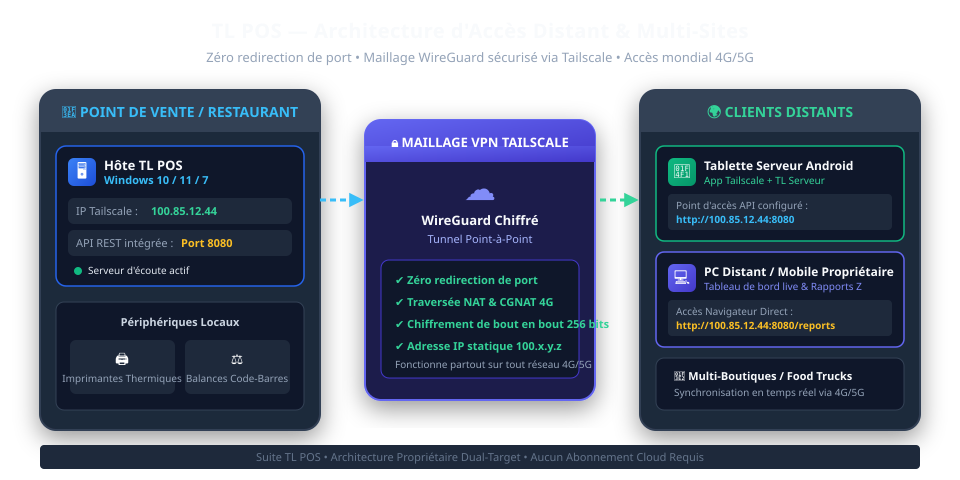

Guide de référence complet pour les caissiers, restaurateurs, gérants et administrateurs réseau.
Déploiement Windows 10/11 & Windows 7, prise de commande sur tablettes Android, profils métiers instantanés,
impression thermique directe, balances code-barres et accès distant sécurisé par maillage VPN Tailscale.
Auteur & Concepteur
Lounes Tinouche (TL) • TL Software Suite
Version du Système
TL POS v2.6 Pro • Édition Multi-Postes
09. Gestion des Stocks, Fiches Techniques & IngrédientsPage 20
10. Sauvegarde, Maintenance & Guide de DépannagePage 21
💡 Philosophie de Conception de TL POS
TL POS a été conçu dès l'origine pour une fiabilité absolue en environnement de vente intensif :
zéro dépendance externe lourde, démarrage instantané en moins d'une seconde, stockage local atomique
immunisé contre les coupures d'électricité, et autonomie complète sans nécessiter d'abonnement cloud récurrent.
01 Présentation Générale & Architecture
L'Écosystème TL POS
TL POS est une suite logicielle complète pour points de vente et restauration,
créée et développée par Lounes Tinouche (TL). Conçue pour une réactivité extrême,
elle offre une interface fluide, intuitive et élégante tant sur les ordinateurs de caisse Windows que sur les
terminaux mobiles Android dédiés aux serveurs en salle.

Figure 1.1 — Écran principal de caisse TL POS (Catalogue produits, panier interactif, encaissement direct et pavé numérique).
Compatibilité Double Système d'Exploitation (Dual-Target)
Contrairement aux solutions modernes basées sur Electron ou Chromium qui saturent la mémoire vive,
TL POS s'exécute sur un moteur binaire ultra-optimisé compilé nativement pour deux cibles :
Version / Cible
Système d'Exploitation Supporté
Consommation RAM
Profil Idéal
TL POS Win10/11 (net10.0)
Windows 10, Windows 11 (64-bit)
~45 Mo
PC de caisse tactiles modernes, postes gérants, ordinateurs portables récents.
TL POS Win7 (net48)
Windows 7 SP1, Windows 8.1, POSReady 7
~25 Mo
Anciens terminaux point de vente tactiles industriels (POSReady/Atom/Celeron).
TL Serveur Android
Android 8.0 jusqu'à Android 15
~35 Mo
Tablettes tactiles de prise de commande, smartphones serveurs, terminaux mobiles.
💎 Deux Thèmes Graphiques & Deux Niveaux de Performance
Thème Clair / Thème Sombre : Basculement instantané selon l'ambiance lumineuse (restaurant tamisé le soir ou boutique très éclairée le jour).
Qualité Haute (High Tier) : Dégradés cybernétiques, ombres douces et transitions animées à 60 images par seconde.
Qualité Légère (Lite Tier) : Interface 100% à plat, aucun timer d'animation, aucune charge CPU résiduelle, idéale pour les processeurs d'ancienne génération.
Figure 1.2 — Interface en Thème Sombre : confort visuel parfait pour les ambiances de bar et restaurant.
02 Installation & Prérequis Matériels
Prérequis Matériels Recommandés
Composant
Configuration Minimale
Configuration Recommandée
Processeur (CPU)
Intel Celeron / Intel Core 2 Duo 1.8 GHz
Intel Core i3 / i5 ou supérieur (ou AMD Ryzen)
Mémoire Vive (RAM)
2 Go de RAM
4 Go à 8 Go de RAM
Disque Dur
200 Mo d'espace libre
Disque SSD (lancement en moins d'une seconde)
Affichage
1024 × 768 (Tactile ou Écran classique)
1920 × 1080 Full HD tactile capacitif
Périphériques
Clavier, souris standard
Imprimante thermique 80mm ESC/POS, tiroir-caisse RJ11, douchette USB
Procédure d'Installation Pas à Pas sous Windows
Télécharger ou Décompresser l'archive :
Placez le dossier d'installation dans C:\TL POS ou directement sur le bureau.
L'application est entièrement portable : elle ne nécessite aucun service Windows externe lourd,
ni Microsoft SQL Server, ni MySQL.
Choisir l'exécutable adapté :
Pour Windows 10 et 11 : Utilisez le dossier publish-win10-x64\TL POS.exe.
Pour Windows 7 SP1 ou POSReady : Utilisez le dossier publish-win7\TL POS.exe.
Créer un raccourci Bureau :
Faites un clic droit sur TL POS.exe → Envoyer vers → Bureau (créer un raccourci).
Lancement initial :
Double-cliquez sur le raccourci. L'application démarre immédiatement et vous invite à renseigner votre clé de licence lors de la toute première ouverture.
🔒 Intégrité de la Base de Données
Toutes les données (articles, familles, tables, ventes, paramètres d'imprimantes, comptes opérateurs)
sont stockées dans le dossier client database\ adjacent à l'exécutable.
Les écritures s'effectuent par écriture atomique sur fichier temporaire puis remplacement éclair,
garantissant l'absence de corruption de données même en cas de coupure de courant soudaine en plein encaissement.
03 Licence Cryptographique & Activation
Sécurité de la Licence par Signature ECDSA
TL POS intègre un système d'activation cryptographique inviolable basé sur la cryptographie sur courbes elliptiques
(ECDSA P-256 avec hachage SHA-256). Ce mécanisme assure à la fois la protection intellectuelle du concepteur
et la garantie d'une licence perpétuelle pour l'acquéreur, sans dépendance vis-à-vis d'un serveur d'activation en ligne.

Figure 3.1 — Fenêtre d'activation de la licence TL POS avec identifiant matériel unique (Machine ID).
Procédure d'Activation Pas à Pas
Au premier démarrage, la fenêtre « TL POS — Activation de Licence » s'affiche à l'écran.
Votre Identifiant Machine (Machine ID) à 16 caractères hexadécimaux apparaît automatiquement
(ex: A1B2-C3D4-E5F6-7890). Cet identifiant est calculé à partir des composants matériels de la machine hôte.
Cliquez sur le bouton Copier l'identifiant et transmettez-le à votre distributeur agréé ou directement à Lounes Tinouche (TL).
En retour, vous recevez un code de licence signé correspondant à votre nom d'établissement.
Saisissez le Nom du Client, collez la Clé de Licence dans le champ prévu, puis cliquez sur Activer la Licence.
Le logiciel vérifie la signature mathématique instantanément, génère le fichier license.dat et déverrouille l'accès complet à vie.
⚠️ Règle de Sécurité Importante
La licence est liée à la carte mère et au processeur du terminal. Si vous devez remplacer l'ordinateur de caisse,
il vous suffit de contacter le support muni de votre facture pour régénérer une nouvelle clé pour le nouvel appareil.
04 Profils Métiers en 1 Clic & Sauvegarde
Les 6 Métiers Préconfigurés
Chaque commerce possède des exigences opérationnelles bien distinctes. TL POS intègre un sélecteur de
Profils Métiers en 1 Clic qui reconfigure instantanément l'intégralité du comportement logiciel
(écrans de vente, priorité douchette, pesée automatique, ventilation des tickets en cuisine, gestion des tables).

Figure 4.1 — Architecture des 6 profils d'activités avec bouclier de sauvegarde « Ma Configuration Personnalisée ».
Profil Métier
Comportement & Réglages Automatiques
🛒 Supermarché & Épicerie
Priorité absolue à la douchette code-barres, décodage des balances poids EAN-13, encaissement au scanner rapide, multi-scan par quantité, ouverture tiroir automatique.
👗 Boutique & Prêt-à-Porter
Gestion des déclinaisons taille/couleur, programme de fidélité clients, gestion des retours et avoirs, émission de chèques-cadeaux.
☕ Café & Boulangerie
Vente comptoir express, gestion des formules repas midi, déduction de TVA différenciée (sur place vs à emporter), préparation rapide des boissons.
🍽️ Restaurant Traditionnel
Plan de salle interactif par zones, transfert et regroupement de tables, réclame des suites (Entrée/Plat/Dessert), partage de l'addition, synchronisation tablettes serveurs.
🍕 Pizzeria & Restauration Rapide
Pizzas moitié-moitié, suppléments d'ingrédients, appel client par bipeur, affectation des livreurs avec suivi départ/retour, écran cuisine tactile.
💊 Pharmacie & Parapharmacie
Traçabilité des numéros de lot et dates de péremption, déconditionnement (boîte vers plaquette), tiers payant et historique ordonnances clients.
Le Bouclier « Ma Configuration Personnalisée »
Pour éviter toute perte accidentelle de vos réglages spécifiques (nom du commerce, TVA locale, imprimantes mappées, options d'arrondi)
lorsque vous explorez les différents profils, TL POS intègre le mécanisme My Customized Setup Safeguard :
Dès que vous modifiez un commutateur dans les Paramètres, vos préférences sont sauvegardées dans votre profil sur-mesure.
Si vous cliquez sur un profil d'exemple pour le tester, un bouton Restaurer ma configuration reste visible en haut de l'écran pour retrouver instantanément vos réglages d'origine en un seul clic.
05 Opérations Quotidiennes de Caisse
1. Connexion Opérateur & Ouverture de Caisse
À l'ouverture du logiciel ou au changement d'équipe, l'écran de verrouillage invite le serveur ou caissier
à sélectionner son profil et à saisir son code confidentiel à 4 chiffres.

Figure 5.1 — Écran de sélection des opérateurs avec nouveau logo TL et pavé numérique tactile.
💰 Saisie du Fond de Caisse Matinal
Lors de la première ouverture de journée, le logiciel demande à l'administrateur ou au caissier
de saisir le montant du Fond de Caisse (espèces en tiroir). Ce montant est isolé du chiffre d'affaires
et réintégré automatiquement lors du calcul de la clôture de caisse Z le soir.
2. Prise de Commande en Mode Salle (Restauration)
Cliquez sur l'onglet Salles & Tables dans la barre de navigation supérieure.
Sélectionnez la salle (ex: Terrasse, Salle Principale, Étage).
Les tables occupées apparaissent en Bleu / Cyan avec le montant en cours et la durée d'occupation.
Les tables libres apparaissent en fond neutre disponible.
Touchez une table libre pour ouvrir une commande. Le catalogue des familles et articles s'affiche.
Touchez les articles pour les ajouter au panier. Pour ajouter des cuissons ou suppléments (ex: À point, Sans oignons),
cliquez sur la ligne d'article dans le panier pour afficher la feuille de modificateurs.
Cliquez sur Envoyer en Cuisine. Le bon de commande s'imprime instantanément sur l'imprimante cuisine
ou s'affiche sur l'écran KDS, et la table passe en statut occupée.

Figure 5.2 — Plan de salle interactif : visualisation en temps réel des tables occupées, montants et temps écoulé.
3. Prise de Commande en Vente Comptoir Directe (Boutique / Fast-Food)
En mode comptoir, le caissier scanne les articles avec la douchette ou clique sur les tuiles produits à l'écran.
La commande s'enregistre immédiatement sans affectation de table.
4. Modes de Paiement & Partage d'Addition
Lorsque le client souhaite régler, cliquez sur le bouton Encaisser :
Espèces : Tapez le montant remis par le client sur le pavé tactile. Le rendu de monnaie s'affiche en gros caractères et le tiroir-caisse s'ouvre automatiquement.
Carte Bancaire / TPE : Validation directe du paiement par carte.
Paiement Mixte / Partage : Permet d'encaisser une partie en carte bancaire, une partie en espèces, ou de diviser l'addition à parts égales entre les convives.
5. Clôture de Journée (Rapports X & Z)
Type de Rapport
Fonction & Conséquence
Rapport X (Lecture de Caisse)
Fournit un état des ventes en cours de journée sans réinitialiser la caisse. Consultable à tout moment par le gérant.
Rapport Z (Clôture Définitive)
Généré en fin de journée : imprime le total du chiffre d'affaires ventilé par taux de TVA,
le montant total par mode de paiement (espèces, cartes, chèques), l'écart éventuel de caisse,
archive la journée et remet le compteur journalier à zéro.
06 Matériel : Imprimantes, Balances & Tickets
1. Configuration des Imprimantes Thermiques (Spouleur & ESC/POS)
TL POS communique directement avec toutes les imprimantes thermiques du marché (Epson, Star Micronics, Bixolon, Xprinter, Munbyn, etc.)
soit via le pilote Windows standard, soit en commandes brutes directes ESC/POS par port USB, Ethernet/LAN ou Wi-Fi.
⚡ Résilience en cas d'Arrêt du Spouleur Windows
Si le service Windows Spouleur d'impression (spoolsv.exe) s'arrête ou devient inaccessible (erreur RPC),
TL POS ne plante pas : il détecte automatiquement la situation, bascule en mode de repli sécurisé et affiche
un avertissement pour redémarrer le service via la commande administrative net start spooler.
2. Concepteur Visuel de Ticket (WYSIWYG)
Dans Paramètres → Matériel → Imprimantes → Éditer le format de ticket,
vous disposez d'un studio visuel permettant de personnaliser chaque élément de vos reçus et tickets de cuisine :

Figure 6.1 — Studio de conception visuelle de ticket : ajout du logo, en-tête, police, cadrage et pied de page.
Logo de l'établissement : Importez votre logo en noir et blanc haute résolution pour une impression thermique nette.
En-tête & Coordonnées : Nom de la société, adresse, numéro fiscal / TVA, numéro de téléphone.
Options du massicot : Déclenchement automatique de la découpe papier en fin de ticket.
Code-barres / Code QR : Impression d'un QR code pour le lien de paiement, facture électronique ou programme fidélité.
Pour les boucheries, poissonneries, boulangeries et épiceries fines équipées d'une balance de pesée à étiquettes,
TL POS intègre un décodeur automatique des codes-barres EAN-13 à préfixe poids (préfixes 20, 21, 22, 23, 24 ou 28) :
Tiroir-Caisse : Connecté en prise RJ11 directement derrière l'imprimante thermique. TL POS envoie l'impulsion ESC/POS 27, 112, 0, 25, 250 lors de la validation d'un règlement en espèces.
Lecteurs Code-Barres (USB / Bluetooth) : Fonctionnent nativement en émulation clavier sans aucun pilote spécifique. Dès qu'un code est scanné, l'article est localisé et ajouté instantanément au panier.
07 Tablettes Serveurs Mobiles (TL Serveur)
Prise de Commande Tactile en Salle
L'application mobile TL Serveur (.NET MAUI optimisé) transforme n'importe quelle tablette ou smartphone
Android en terminal de commande mobile ultra-rapide pour les serveurs en salle, terrasse ou étage.
Figure 7.1 — Application mobile TL Serveur Android : plan de salle interactif et catalogue de commande tactile.
Connexion Locale en Réseau Wi-Fi
Le terminal Windows principal héberge un micro-serveur REST haute performance sur le port 8080.
Pour connecter les tablettes au sein de votre établissement :
Connectez la tablette Android au même réseau Wi-Fi que l'ordinateur de caisse Windows.
Sur le PC de caisse, ouvrez Paramètres → Réseau pour noter l'adresse IP locale
(ex: 192.168.1.50).
Sur la tablette Android, lancez TL Serveur, appuyez sur le menu ... en haut à droite,
et saisissez l'adresse de l'API : http://192.168.1.50:8080.
La liste des salles, tables et articles se synchronise immédiatement en moins d'une seconde.
08 Accès Distant & Multi-Sites via Tailscale
Pourquoi Tailscale est la Solution Idéale pour TL POS
Traditionnellement, connecter des terminaux distants (serveurs en terrasse éloignée, food trucks, gérant à domicile)
exigeait une adresse IP publique fixe coûteuse et l'ouverture de ports sur la box Internet (Port Forwarding),
ce qui expose le réseau aux attaques informatiques.
Avec Tailscale, vous créez un réseau maillé sécurisé (Mesh VPN) chiffré de bout en bout
avec le protocole militaire WireGuard. Les appareils communiquent directement de pair à pair
(Peer-to-Peer) à travers le monde entier, même derrière des routeurs 4G/5G stricts (CGNAT) !

Figure 8.1 — Schéma d'architecture d'interconnexion sécurisée via le maillage VPN Tailscale.
Étape 1 : Installer Tailscale sur le PC de Caisse Windows
Rendez-vous sur https://tailscale.com et créez un compte gratuit (valable jusqu'à 100 appareils).
Téléchargez et installez l'application Tailscale pour Windows sur votre ordinateur de caisse principal.
Connectez-vous à votre compte. Tailscale attribue à votre caisse une adresse IP statique privée commençant par 100.x.y.z (ex: 100.85.12.44).
Étape 2 : Connecter la Tablette Serveur en 4G/5G ou Wi-Fi Distant
Sur la tablette Android du serveur, installez l'application Tailscale depuis le Google Play Store.
Connectez-vous avec le même compte. La tablette rejoint automatiquement le maillage sécurisé.
Ouvrez l'application TL Serveur, entrez dans les paramètres et indiquez simplement : http://100.85.12.44:8080 (en remplaçant par l'IP Tailscale de votre PC de caisse).
Vos serveurs peuvent désormais prendre des commandes sur le trottoir d'en face, en terrasse extérieure ou sur un événement mobile sans aucune déconnexion.
Étape 3 : Tableau de Bord Live pour le Propriétaire (Depuis chez Soi ou en Déplacement)
Depuis votre ordinateur personnel ou votre smartphone, installez Tailscale, ouvrez votre navigateur internet favori et tapez : http://100.85.12.44:8080/reports
Vous visualisez en temps réel le chiffre d'affaires, le panier moyen, les tables ouvertes et l'état des stocks sans jamais interrompre le travail des caissiers sur place.
09 Gestion des Stocks & Fiches Techniques
1. Suivi des Stocks Simples
Pour les articles vendus tels quels (boissons en bouteille, snacks, vêtements, articles manufacturés),
activez l'option Suivi de stock dans la fiche produit. Chaque vente décrémente automatiquement le stock restant.
Des alertes visuelles préviennent le caissier dès qu'un produit passe sous le seuil d'alerte défini.
2. Fiches Techniques & Déduction des Ingrédients (Restauration)
Pour les restaurants, pizzerias, boulangeries et bars, la vente d'un plat fini doit déstocker ses ingrédients élémentaires.
TL POS intègre un moteur de recettes multicouches :
Parce que vos données commerciales sont précieuses, TL POS simplifie la sauvegarde à l'extrême :
aucune procédure complexe de base de données SQL n'est nécessaire.
Fermez l'application TL POS.
Copiez simplement le sous-dossier client database\ sur une clé USB ou un disque externe sécurisé.
C'est terminé ! Ce dossier contient l'ensemble de votre catalogue, historiques des ventes, utilisateurs et personnalisations.
2. Déplacement du Logiciel sur un Nouvel Ordinateur
Copiez l'intégralité du dossier du logiciel sur le nouvel ordinateur. Vos données, historiques et paramétrages
sont immédiatement disponibles sans aucune manipulation supplémentaire.
3. Guide de Dépannage des Pannes Courantes
Symptôme Constaté
Cause Probable
Procédure de Résolution Immédiate
« Le serveur RPC n'est pas disponible » à l'ouverture des imprimantes
Le service Windows Spouleur d'impression (Spooler) a été désactivé ou a planté.
Ouvrez l'invite de commandes en mode administrateur et exécutez la commande : net start spooler. TL POS détectera instantanément vos imprimantes.
Le tiroir-caisse ne s'ouvre pas lors d'un paiement en espèces
Câble RJ11 mal enclenché ou mauvaise imprimante par défaut.
Vérifiez que le câble RJ11 est bien inséré dans la prise DK (Drawer Kick) de l'imprimante thermique et non dans une prise Ethernet réseau.
La tablette Android n'arrive pas à se connecter à la caisse
Pare-feu Windows bloquant le port 8080 ou réseau Wi-Fi différent.
Sur le PC de caisse, ouvrez le Pare-feu Windows et autorisez le trafic entrant sur le port TCP 8080. Vérifiez que la tablette est sur le même Wi-Fi ou connectée au VPN Tailscale.
Le lecteur de code-barres ne transmet pas le code
Câble USB débranché ou mauvais encodage clavier (QWERTY/AZERTY).
Scannez le code-barres de configuration « French AZERTY Keyboard » présent sur la notice de votre douchette pour caler les chiffres.
TL POS Suite • Conçu et développé par Lounes Tinouche (TL) • Tous droits réservés.